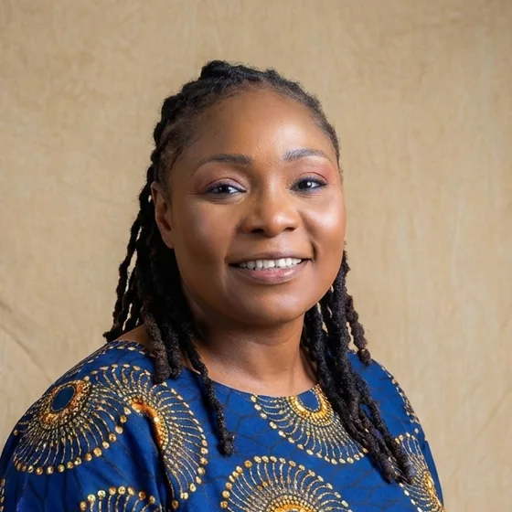

Repenser l’Afrique. Reconquérir l’intelligence. Réimaginer l’avenir.
Une plateforme médiatique fondée sur la recherche, qui explore le développement, les savoirs, la gouvernance, la culture et les possibles africains dans une perspective centrée sur l’Afrique.

Comment vous a-t-on appris à voir l’Afrique ?
Sept questions, environ quatre-vingt-dix secondes. Découvrez lequel des cinq profils de bâtisseurs de l’avenir africain est le vôtre, et recevez le manifeste gratuit.
Faire le quiz Africa LensGratuit. Sans paiement, jamais.
Rethinking Africa with Dr. Damola réunit la recherche, l’expérience vécue et les voix africaines pour examiner les systèmes qui façonnent le continent, et explorer des voies concrètes vers l’autonomie, l’excellence et le renouveau africains.
Trained Away
Pourquoi l’éducation africaine prépare souvent les jeunes à quitter les opportunités locales plutôt qu’à les transformer, et ce que ferait une éducation conçue à partir des réalités africaines.
L’Afrique ne manque pas d’intelligence
Son défi est qu’une grande partie de son intelligence n’a pas été suffisamment reconnue, affinée, institutionnalisée, financée et transformée en puissance collective. Cette plateforme va au-delà de la description des problèmes de l’Afrique : elle demande comment ils ont été produits, ce qui les entretient, quels savoirs ont été négligés et quelles alternatives concrètes peuvent être construites. En savoir plus sur la vision.
Ce n’est pas le passé. C’est une science interrompue.
Le canari en argile n’est pas un symbole de pauvreté ; c’est un dispositif thermodynamique autonome, perfectionné par des générations d’expérimentation empirique. Grâce à l’imagerie spéculative par IA, nous montrons à quoi devraient ressembler aujourd’hui les sciences africaines si leur développement n’avait jamais été violemment interrompu.


Ce qui a été interrompu peut être restauré. Ce qui a été différé peut être retrouvé.
L’histoire que nous repensons


Six grands thèmes
Éducation & savoirs
Comment l’éducation façonne l’identité, l’ambition, le travail et les possibles africains.
Gouvernance & institutions
Comment les États africains peuvent bâtir des systèmes crédibles, responsables et ancrés dans leur culture.
Savoirs endogènes & innovation
Comment les savoirs hérités peuvent devenir science, entreprise et industrie contemporaines.
Travail, production & excellence
Pourquoi l’Afrique importe l’expertise et comment renforcer les compétences locales.
Culture, identité & autonomie africaine
Comment la langue, les médias, la religion et le pouvoir mondial façonnent la perception que l’Afrique a d’elle-même.
Avenirs africains
Comment les Africains peuvent concevoir des villes, des institutions, des technologies et des économies enracinées dans leurs réalités.
Quels savoirs vos parents possédaient-ils que votre génération n’a pas su hériter ?
Envoyer votre réponseDes réponses choisies sont publiées sur le site avec l’accord de leurs auteurs.
Plusieurs voix, une seule table
Chercheurs, artisans, étudiants, entrepreneurs, aînés, décideurs et diaspora. Chaque mois, cette plateforme met en lumière une voix africaine et les savoirs qu’elle porte. Si c’est vous, ou quelqu’un que vous connaissez, dites-le-nous.
Les écrits
Articles, synthèses de recherche, listes de lecture et notes téléchargeables accompagnent les épisodes. C’est ce qui distingue la plateforme du simple commentaire : chaque affirmation peut être rattachée à une source.
L’avenir de l’Afrique ne peut être imaginé par une seule voix
Apportez votre recherche, votre expérience, votre question ou votre histoire à la conversation.
Rencontrez Dr Damola

Dr Damola est économiste du développement, chercheuse afrocentrée, généraliste de l’IA, stratège en politiques publiques et artiste de musique gospel, avec plus de 25 ans d’expérience au sein de l’administration, du monde universitaire et du conseil international. À travers Rethinking Africa, elle fait sortir le savoir des cercles académiques fermés pour le porter dans le débat public.
Pour les chercheurs, les étudiants, les décideurs, les professionnels, les créateurs, les responsables communautaires, les membres de la diaspora, et toutes celles et ceux engagés dans le renouveau intellectuel et le développement de l’Afrique.
Rejoignez les 1 000 fondateurs
Faites partie des mille premiers membres d’un mouvement pour retrouver l’intelligence et l’autonomie africaines. Découvrez des perspectives centrées sur l’Afrique et fondées sur la recherche, regardez des conversations avec des chercheurs et des praticiens, et recevez les nouveaux épisodes, articles et invitations, en commençant par la série gratuite 7 jours pour repenser.
Pas de spam. Désabonnement à tout moment.
Aidez cette initiative à grandir
Rethinking Africa with Dr. Damola est une initiative indépendante. Votre soutien finance la recherche, la production, la traduction et la documentation des savoirs africains, et permet à cette plateforme de rester gratuite pour les étudiants et les communautés de tout le continent.
Les dons soutiennent une initiative éducative indépendante et ne sont pas des dons de bienfaisance déductibles des impôts. Un résumé de l’utilisation des fonds est publié chaque année sur ce site.
Devenez partenaire de Rethinking Africa
Universités, centres de recherche, institutions culturelles, médias et organismes de développement sont invités à collaborer à des projets de recherche, de médias et d’engagement public.
Engager la conversation